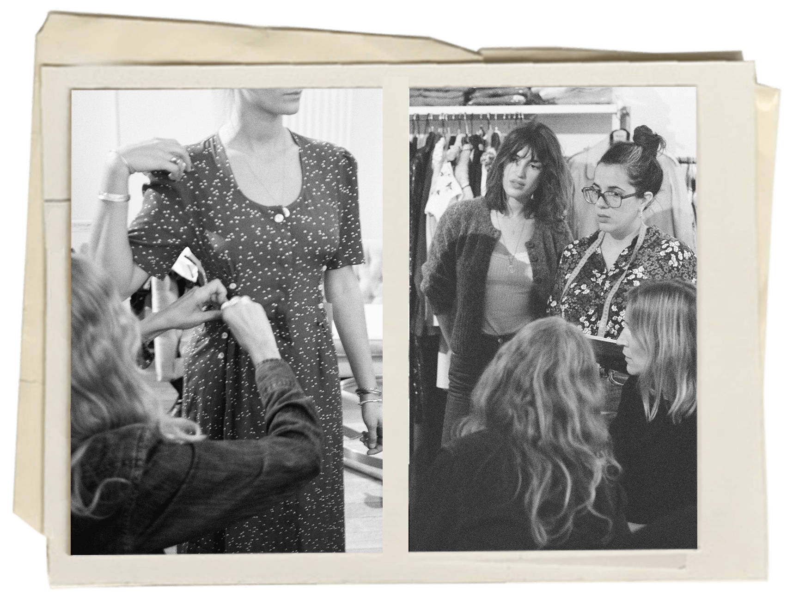

Nosotros
Detrás de Florilegium, está Ana Rivet y todo lo que la inspira. Inspiración que viene del pasado y del presente. Y sobre todo de las mujeres: las que nos cruzamos en la calle o vemos en el cine, las que leemos en los libros o con las que cruzamos miradas en el subte.
En 2016, nace Florilegium. Con la ayuda de un grupo de amigas creativas muy unidas, Ana Rivet dirige y reinventa el guardarropa de sus sueños temporada tras temporada: ropa diseñada por mujeres, para mujeres.